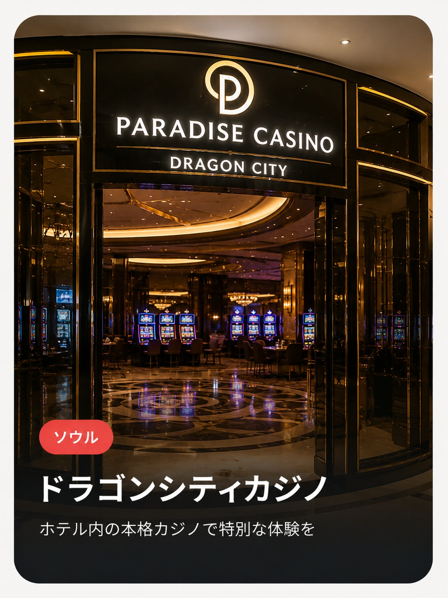

- 正式名称
- Seven Luck Casino Seoul Dragon City（外国人専用カジノ）
- 住所
- ソウル特別市 龍山区 청파로20길 95（Seoul Dragon City内 Convention Tower 5F）
- 利用条件
- 19歳以上・パスポート必携（外国人専用、韓国籍の方は入場不可）
- アクセス
- 地下鉄1号線 龍山駅から徒歩約10分。2日目の宿泊先からタクシーで15〜20分程度
💡 グランド・ハイアット・ソウル龍山ドラゴンシティ内。バカラ・ブラックジャック・ルーレット・スロットなどが楽しめる。